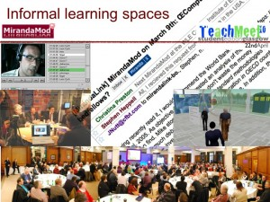

Two free workshops for associates

Workshop One
{kind=link}
21-27 Lamb’s Conduit St
London WC1N 3BD
Google Tour here
28th April 1600-1830
The MirandaNet/EU LLL Partnership workshop
28th April 2014 : 1530 refreshments
Workshop 1600-1830 followed by a networking supper
EU LLL HandsOn project: MirandaNet are partners with teams from Greece, Slovenia, Spain and The Netherlands in the development of online professional development for teachers in how to develop e-learning in the higher education, vocational and school sectors about digital technologies in Teaching and Learning.
Workshop: How to bid for projects and sustain them after the initial funding
The aims of this EU partnership workshop are to:
- develop partnerships to extend the life of the current EU HandsOn ICT project;
- establish funding consortiums to make new bids
Opening refreshments 1530-1600
Part one: MirandaMod presentations 1600-1730
(Each partner in the bidding consortium describes their expertise and potential contribution to the consortium- 3mins each. Read about MirandaMods )
{kind=link}
MirandaMod participants
Introduction: Christina Preston – Planning the sustainability of funded projects
The key issues
- Adrian Hall – Operating in a new political paradigm
- Caroline Wright, BESA – Research and development in the UK education industry
- Graham Newell, Geoffrey Richard Howson, Vesna Belogaska-IRIS Connect Challenges for companies seeking research and development funds
- Rachel Jones – the value of R&D projects for CPD in schools
- Ian Lynch – Ingots- Accreditation as a motivator
Funded Projects
- Israel Conejero Arto – The HandsonICT Project
- Diana Laurillard/Patricia Charlton – Learning Designer
- Marilyn Leask- MESH
{kind=link}
- Using research and development methods to promote CPD led by Sarah Younie, MirandaNet director of Innovation and Research with Karen Cameron and the MN associates: Groupcall Stuart Abrahams: LightSpeed, Roger Turner; Brain Pop, Christopher Bradford; Tablet Academy, David Fuller.
Other attendees: Theo Kuechel, Dominic Preston and Matt Nicholson, MirandaNet: Andrew Kennedy, MovieStorm; Dean Ricketts; Bob Harrison, Toshiba; Rachel Womack, Mango Marketing.
(Each participant in a MirandaMod has 3 minutes to cover the headlines of their case in this debate. More information can be entered into the EdComms website. sign up to the MirandaNet funding consortium).
Refreshments 1730 – 1745
1745-1830 Mapping the route forward
A workshop mapping:
- potential consortium topics for bidding
- appropriate bids and deadlines;
- potential bid leaders;
- actions;
- joining the EdComms web space;
{kind=link}
1.25 hour workshop aiming at a bidding and sustainability planning using a digital concept map to develop the networking opportunities led by Ian Lynch.
1830 Networking dinner
Ciao Bella 86-90 Lamb’s Conduit St, Bloomsbury, WC1N 3LZ.
All workshop members will all pay individually for the dinner – from £15:00/£19:00 per head excluding drinks. Individual receipts can be supplied.
Read more about EU HandsOnICT project on the Blog
All workshop members will all pay individually for the dinner – from £15:00 per head excluding drinks. Individual receipts can be supplied.
************************************************************************************
The workshop in support of the HandsOn ICT sustainability programme will be attended by EU partners, associates and contacts.
Read more about EU HandsOnICT project on the Blog
{kind=link}
Partners: EU LLL HandsOn/MirandaNet/ London Knowledge Lab IOE
Notes about MirandaMods
{kind=link}
A MirandaMod is an informal, unconference where educators meet face to face and online to discuss and share ideas about the use of technology in education and lifelong learning. They are a regular feature of the MirandaNet calendar and are often held, alongside, or as an integral part of other educational conferences or events in the UK and around the world.
On April 28th we will be trying out the Omnijoin webinar technology developed by Brother
in order to improve the flexibility as can offer and also to improve the sound quality.
MirandaMods use the power of social media to connect participants, allowing them to
participate online, through a range of collaborative technologies including video conferencing, microblogging and collaborative concept maps, emphasising the social element of learning. MirandaMods are usually broadcast live.
{kind=link}
Background
MirandaMods get their name from the MirandaNet community and the Gaelic word for a ‘gathering or assembly’, MirandaNet acknowledges its indebtedness to other unconferences, especially Teachmeet, the initial inspiration for MirandaMods. We see MirandaMod as an addition, to the grass roots educational movement. It is highly likely that members of the MirandaMod community will be involved with Teachmeet events and vice versa.
Dr John Cuthell has developed a major resource about MirandaMods that you will find here You will find BETT13 MirandaMods here
2. Action Research Groups
MirandaNet associates are invited to ask more about these action research groups that have emerged from our MirandaMods at BETT14:
- MOOCs: design, delivery and impact on the education industry; ( EU HandsOn ICT)
- Parental Engagement and the influence on Learning includng mobile connections (Group Call and Tablet Academy);
- The value of games in learning (Yellow Spot and Brain Pop);
- The impact of web-based video on professional development and pupil behaviour (IRIS Connect);
- Using social media in careers advice (icould);
- Coding and the balance of the Computing Curriculum;
- World Ecitizens: teachers from around the world talking about their practice in digital technologies.
Email christina@mirandanet.ac.uk